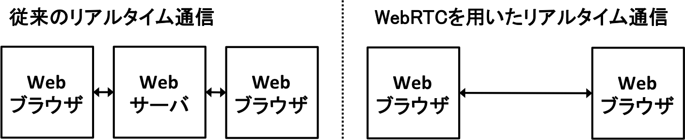
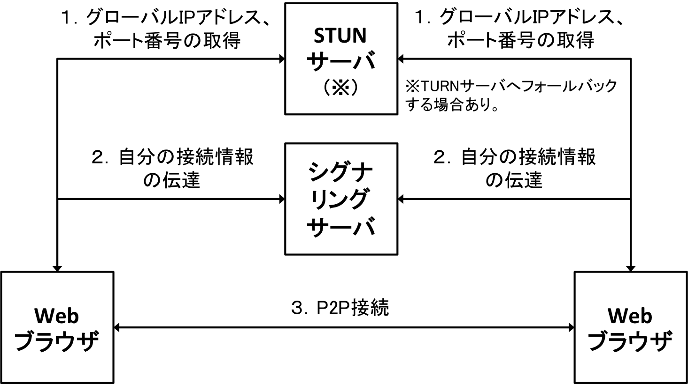

Created by Keiji Yoshida / @yosssi84

| W3C標準 | Google Chrome | Firefox |
|---|---|---|
| getUserMedia | webkitGetUserMedia | mozGetUserMedia |
| RTCPeerConnection | webkitRTCPeerConnection | mozRTCPeerConnection |
| RTCSessionDescription | RTCSessionDescription | mozRTCSessionDescription |
| RTCIceCandidate | RTCIceCandidate | mozRTCIceCandidate |

// Peerオブジェクトの生成（シグナリングサーバのホスト名とポート番号を指定する）
var peer = new Peer({host: 'localhost', port: 9000});
// シグナリングサーバとの接続確立時にopenイベントが発生
peer.on('open', function(id){
getUserMedia({video: true, audio: true}, function(stream) {
var call = peer.call('another-peers-id', stream);
call.on('stream', function(remoteStream) {
// 受け取ったストリームをvideoタグなどへ出力する処理を記載
});
}, function(error) {
// ローカルストリーム取得失敗時の処理を記載
});
});
// Peerオブジェクトの生成（シグナリングサーバのホスト名とポート番号を指定する）
var peer = new Peer({host: 'localhost', port: 9000});
// 他のWebブラウザからの受信時にcallイベントが発生
peer.on('call', function(call){
getUserMedia({video: true, audio: true}, function(stream) {
call.answer(stream);
call.on('stream', function(remoteStream) {
// 受け取ったストリームをvideoタグなどへ出力する処理を記載
});
}, function(error) {
// ローカルストリーム取得失敗時の処理を記載
});
});
$> npm install peer
$> peerjs --port 9000 --key peerjs